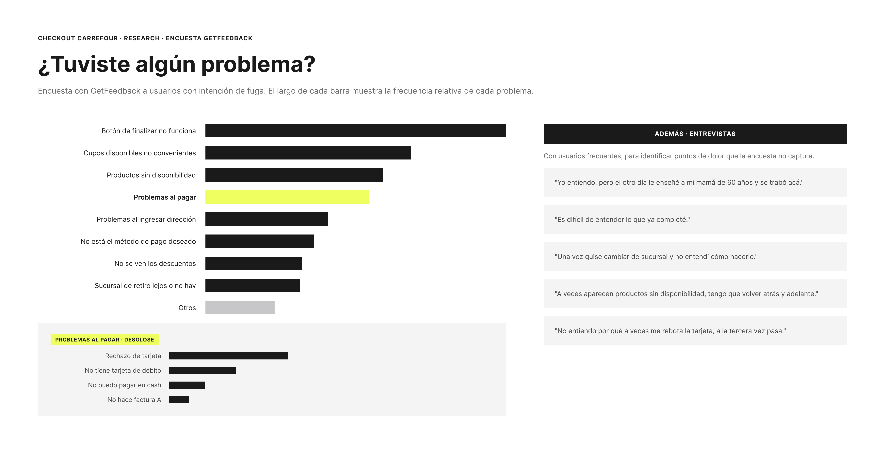
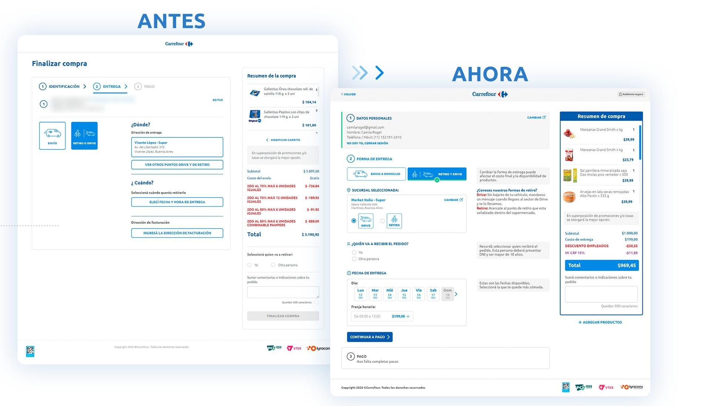
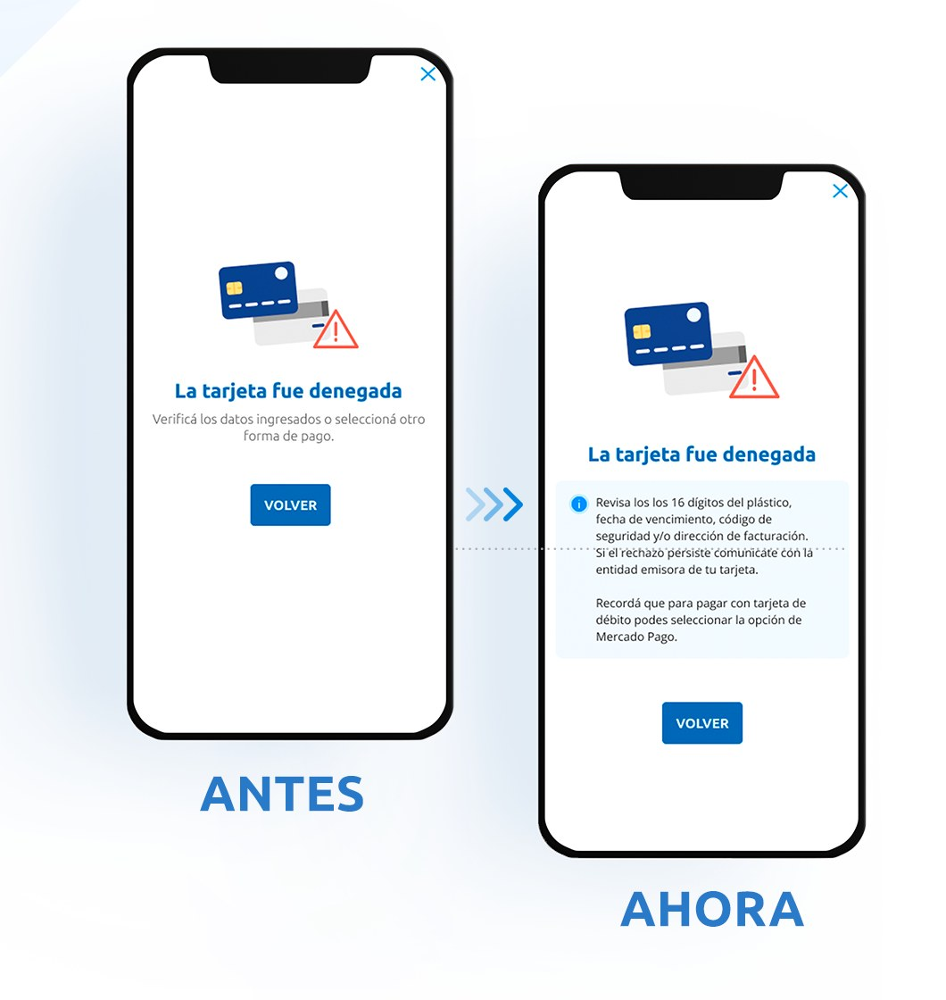
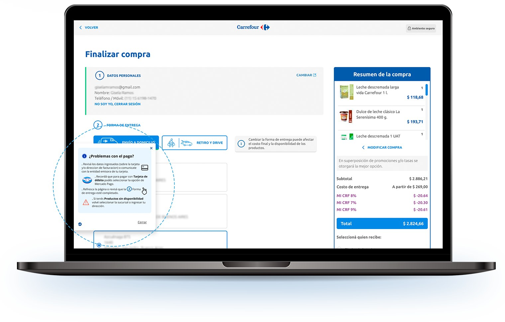

Checkout: disminuir la fuga de usuarios en el paso final de compra
Cómo pasamos de saber que los usuarios abandonaban el checkout a saber por qué, y atacamos las causas con tres frentes de trabajo: rediseño de pantallas, mejor información de errores y un pop-up de ayuda para quienes estaban por irse.
Rol
UX/UI Designer (equipo UXUI interno)
Alcance
Research, fast fixes, rediseño del checkout
Empresa
Carrefour Argentina (carrefour.com.ar)
Herramientas
Figma · GetFeedback
Resumen
El checkout de carrefour.com.ar perdía usuarios en el proceso final de pago, el momento más caro para perderlos. Desde el equipo UXUI nos propusimos disminuir esa fuga, con tres desafíos encadenados: identificar los problemas funcionales y de usabilidad, resolver lo urgente con fast fixes y encarar un rediseño de pantallas. El resultado: -11% en el porcentaje de salida y -2% en la tasa de rebote.
Problem statement
Business pain. Un usuario que abandona en el checkout ya eligió sus productos y decidió comprar: cada fuga en ese paso es una venta prácticamente cerrada que se pierde. La analítica mostraba el abandono, pero no explicaba sus causas.
User pain. El proceso acumulaba fricciones de distinto tipo: errores funcionales, información confusa y rechazos de pago sin explicación.
Sabíamos cuántos usuarios se iban del checkout, pero no por qué. Sin las causas, no había forma de priorizar qué arreglar primero.
Research & Discovery
A través de GetFeedback se realizó una investigación con los usuarios que mostraban intención de fuga: una encuesta en el momento del abandono ("¿Tuviste algún problema?") que permitió cuantificar los motivos reales:
Problemas al pagar, el grupo más crítico: rechazo de tarjeta, no tiene tarjeta de débito, no puede pagar en efectivo, no puede generar factura A.
El botón de finalizar no funciona, falla funcional directa.
Problemas al ingresar la dirección y no está el método de pago deseado.
Sucursal de retiro lejos o inexistente y cupos de entrega no convenientes.
No se ven los descuentos y productos sin disponibilidad.

Encuesta a usuarios con intención de fuga: distribución de los motivos de abandono.
Entrevistas con usuarios frecuentes
Para complementar el dato cuantitativo, se hicieron entrevistas con usuarios frecuentes que permitieron identificar puntos de dolor con más matices:
"…es difícil de entender lo que ya completé…"
"…una vez quise cambiar de sucursal y no entendí cómo hacerlo…"
"…a veces aparecen productos sin disponibilidad, tengo que volver atrás y adelante…"
"…no entiendo por qué a veces me rebota la tarjeta, a la tercera vez pasa…"
"…yo entiendo, pero el otro día le enseñé a mi mamá de 60 años y se trabó acá…"
De research a decisión de producto
Los dos métodos convergían: la encuesta señalaba al pago como el mayor bloqueo y las entrevistas mostraban que el problema no era solo funcional, era de comunicación. El usuario no entendía qué había pasado ni qué hacer después. Eso definió los tres frentes de trabajo.
Definición: How Might We
¿Cómo podríamos hacer que el usuario entienda en todo momento dónde está parado dentro del checkout y qué le falta completar?
¿Cómo podríamos convertir un rechazo de pago (que hoy es un callejón sin salida) en un paso recuperable?
¿Cómo podríamos intervenir antes de que un usuario con problemas abandone, en lugar de enterarnos después?
Objetivo de negocio
Objetivo
Métrica
Meta
Disminuir la fuga en el proceso final de pago
% de salida (exit rate)
Reducir
Mejorar la retención en el flujo
Tasa de rebote (bounce rate)
Reducir
Qué hicimos: tres frentes de trabajo
1 · Rediseño de pantallas
Ajustamos los estilos de los componentes, intensificamos la separación de información y cambiamos la estructura del checkout, respondiendo directamente al "no entiendo lo que ya completé" de las entrevistas: pasos más legibles, resumen de compra siempre visible y jerarquía clara entre datos personales, entrega y pago.

Antes / Ahora: nueva estructura, componentes actualizados y separación clara de la información.
2 · Información ante el rechazo de pago
Muchos de los problemas se situaban en el rechazo de las tarjetas de crédito, y el mensaje existente solo decía "La tarjeta fue denegada" con un botón de volver. Se propuso darle al usuario información sobre la posible causa: revisar los datos ingresados, contactar a la entidad emisora, o cómo pagar con débito. Un fast fix de comunicación, sin tocar el motor de pagos.

Antes / Ahora: el rechazo de tarjeta pasa de callejón sin salida a paso recuperable.
3 · Potentially leaving
Con GetFeedback identificamos en tiempo real a los usuarios con intención de salida o inactividad dentro del checkout, y sumamos un pop-up de ayuda ("¿Problemas con el pago?") que ofrece las respuestas a los bloqueos más frecuentes justo en el momento en que el usuario está por abandonar.

Pop-up de ayuda: se activa ante intención de salida o inactividad, con respuestas a los bloqueos más frecuentes.
Resultados e impacto
Métrica
Resultado
% de salida (exit rate)
-11%
Tasa de rebote (bounce rate)
-2%
La combinación de los tres frentes (estructura más clara, errores que explican qué hacer y ayuda proactiva antes del abandono) se tradujo en una caída del 11% en el porcentaje de salida del checkout y del 2% en la tasa de rebote.
Aprendizajes
01
Instrumentar el research en el momento del dolor
Preguntarle al usuario "¿tuviste algún problema?" justo cuando está por abandonar dio datos mucho más accionables que cualquier analítica retrospectiva, y permitió priorizar con evidencia, no con intuición.
02
Los fast fixes de comunicación rinden
El cambio del mensaje de tarjeta denegada no tocó una línea del motor de pagos y atacó el motivo de fuga más reportado. No todo problema de checkout se resuelve rediseñando pantallas.
03
Cuanti y cuali se necesitan mutuamente
La encuesta dijo dónde estaba el problema; las entrevistas explicaron por qué. Sin las dos fuentes, los tres frentes de trabajo no se hubieran definido igual.